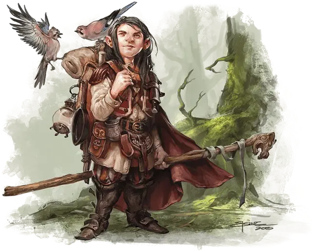

Друид
Druid
Средний Гуманоид, любое мировоззрение

Класс Доспеха 11 (16 с дубовой корой)
Хиты 27 (5к8 + 5)
Скорость 30 футов
| мод | спас | ||
|---|---|---|---|
| СИЛ | 10 | +0 | +0 |
| ЛОВ | 12 | +1 | +1 |
| ТЕЛ | 13 | +1 | +1 |
| мод | спас | ||
|---|---|---|---|
| ИНТ | 12 | +1 | +1 |
| МДР | 15 | +2 | +2 |
| ХАР | 11 | +0 | +0 |
Навыки Восприятие +4, Медицина +4, Природа +3
Чувства пассивное Восприятие 14
Языки Друидический, знает два любых языка
Опасность 2 (450 опыта)
Бонус мастерства +2
Среда обитания Арктика, Болото, Горы, Лес, Луг, Побережье, Подземье, Пустыня, Холмы
Особенности
Использование заклинаний. Друид является заклинателем 4-го уровня. Его базовой характеристикой является Мудрость (Сл спасброска от заклинания 12, +4 к попаданию атаками заклинаниями). У него подготовлены следующие заклинания друида:
• Заговоры (неограниченно): дубинка [shillelagh], искусство друидов [druidcraft], сотворение пламени [produce flame];
• 1 уровень (4 ячейки): волна грома [thunderwave], опутывание [entangle], разговор с животными [speak with animals], скороход [longstrider];
• 2 уровень (3 ячейки): дубовая кора [barkskin], почтовое животное [animal messenger].
Действия
Боевой посох. Рукопашная атака оружием: +2 к попаданию (+4 к попаданию с дубинкой), досягаемость 5 футов, одна цель. Попадание: 3 (1к6) дробящего урона, 4 (1к8) дробящего урона при использовании двумя руками, или дробящий урон 6 (1к8+2) с дубинкой [shillelagh].
Описание
Друиды живут в лесах и других уединённых местах в дикой местности, где занимаются защитой природы от чудовищ и вторжения цивилизации. Некоторые из них являются шаманами племени, лечащими больных, молящимися духам животных и дающими духовное руководство.